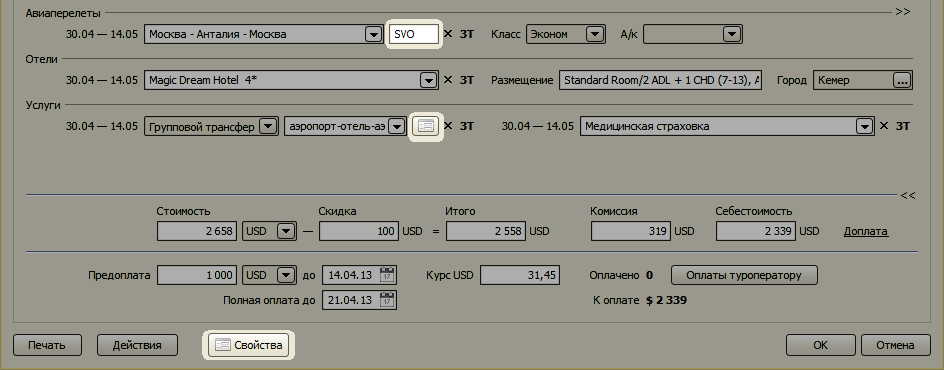
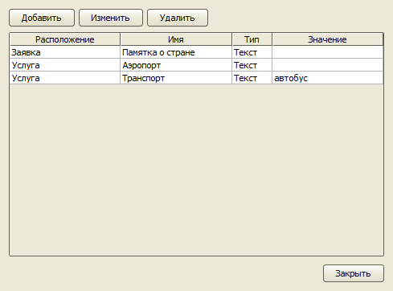
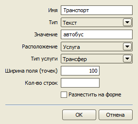

Дополнительные свойства заявок
Главное меню → Настройки → Дополнительные свойства заявок
В программе имеется возможность добавить дополнительные поля для ввода текста, чисел и дат в заявку. Значения этих полей в дальнейшем могут быть выведены в печатных формах заявки. Каждое поле может принадлежать заявке целиком, пакету услуг или определенной услуге. На форме заявке поля дополнительных свойств отображаются при нажатии на кнопку "Свойства" или встраиваются прямо в интерфейс формы.

Добавлять дополнительные свойства заявок может только пользователь с ролью Администратор.

При создании указываются следующие параметры:
- Название
- Тип
- Ширина (в пикселях)
- Количество строк – для текстовых полей
- Место на форме заявки, где отображается поле
- Показать на форме – встраивать ли поле в форму или отображать по нажатию кнопки Свойства

При добавлении дополнительного свойства в шаблонах Договора и Заявки становятся доступны теги для вывода значений
этих свойств. Название тега формируется по следующему правилу: из названия удаляются все пробелы,
каждое слово в начинается с заглавной буквы. Например, свойству "Условия аннуляции тура" соответствует тег
[УсловияАннуляцииТура], свойству "Памятка о стране" – тег [ПамяткаОСтране]. Для свойств пакета услуг
данные выводятся в таблице СвойстваПакетовУслуг.
Остались вопросы? Напишите нам на e-mail